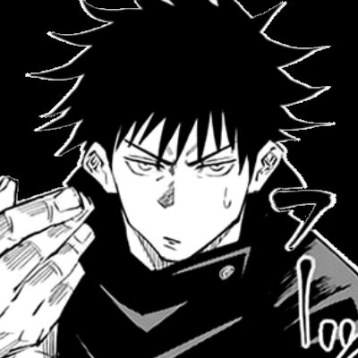

About Jujutsu Kaisen
Facts
| Character | Description |
|---|---|
| Yuji Itadori | First-year student at Tokyo Metropolitan Curse Technical College. |
| Megumi Fushiguro | Second-year student at Tokyo Metropolitan Curse Technical College, and a skilled user of Shikigami. |
| Nobara Kugisaki | First-year student at Tokyo Metropolitan Curse Technical College, and a skilled user of cursed tools. |
| Satoru Gojo | Jujutsu sorcerer and the strongest known sorcerer in the world. He is also the mentor of Yuji Itadori. |
| Kento Nanami | Second-grade jujutsu sorcerer who works as a salaryman. |
| Panda | Jujutsu sorcerer who is also a cursed corpse, a unique type of cursed object. |
| Maki Zenin | Second-grade jujutsu sorcerer who comes from a prestigious family of jujutsu sorcerers. |
| Toge Inumaki | Second-grade jujutsu sorcerer who communicates using cursed words. |
| Mei Mei | Second-grade jujutsu sorcerer who works as an assassin. |
Quotes
"Education Is Making People Realize Things." -Masamichi Yaga
"Won’t It Get Lonely All By Yourself?" - Suguru Geto
“We Can’t Have Him Becoming SkullGreymon...” Satoru Gojo